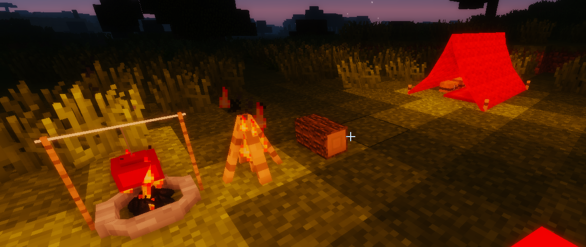
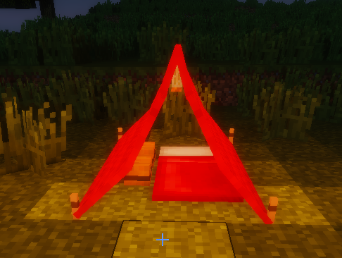
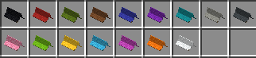
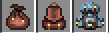
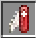
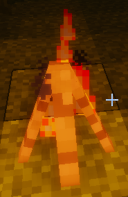
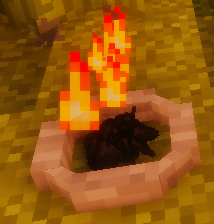

카테고리 제작 목적 : 마인크래프트가 유투브 컨텐츠 제작 및 새로운 세계관과 관계 모델링을 보여주는 툴로 활용되는 시작점인 지금 창작자 여성들이 다양한 마인크래프트 모드를 쉽게 접하고 활용할 수 있도록 한글로 정보를 제공하여 전체적인 접근도 향상에 기여하는데 그 목적이 있다. 개개의 모드를 상세히 설명하는 하위 문서를 먼저 만든 후 마인크래프트 전체 모드문서를 생성할 예정.

마인크래프트 모더 rikmuld가 만든 캠핑 모드. 현 버전 1.12.2까지 지원되며, 실행에 Rikmulds Core 모드를 모드 폴더에 함께 넣어야 실행된다.


침낭, 상자, 랜턴을 설치할 수 있는 텐트. 랜턴에는 발광석 가루를 넣어야 빛이 난다. 텐트를 만들 수 있는 캔버스는 강가에서 자라는 햄프를 채취해 스위스 칼과 조합하면 만들 수 있다.
이 모드를 설치하면 기본 인벤토리 탭이 확장되어 추가적인 가방 탭, 제작 탭, 캠핑옵션 설정 탭이 활성화된다. 들고 다닐 수 있는 랜턴과 지도 탭도 포함된다.
|  | 파우치, 백팩, 등산가방 | 3칸, 9칸, 27칸 |
가방은 탭이 추가되기는 하나 등에 멘 모습이 보이지는 않는다.
|  | 제작대와 같은 9칸의 휴대용 조합 탭을 지원한다. |

나무 막대기를 들고 길게 우클릭을 하면 연기가 솟으면서 불이 난다. 이후로는 연료 공급이 필요 없으며, 목재 캠프파이어 앞에 통나무 의자를 두고 마시멜로우 꼬지를 든 채 앉으면 시간이 지났을 때 구워진 마시멜로우 꼬지를 얻게 된다.

석탄을 넣으면 자동으로 불이 붙는다. 사용하고 싶을 때마다 석탄을 공급해야 하며, 스핏키트, 그릴키트, 팬키트를 끼우면 물고기를 구울 때 활용할 수 있다. 불에 올리고 시간이 지나면 금세 재가 되어버리므로 적당히 익었을 때 꺼내야 한다.
| 그리즐리 베어 | 갈색 곰. 곰덫을 설치해 잡을 수 있다.1 |
| 북극여우 | 흰색 여우. |
| 캠핑족 | 인간형 npc. 에메랄드를 주고 캠핑용품을 교환할 수 있다. |